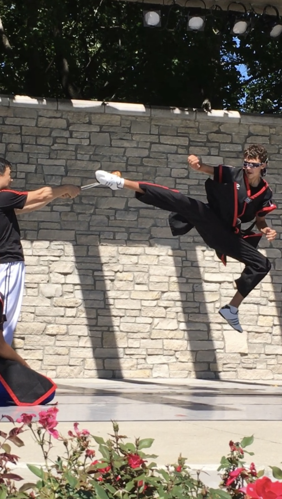

Home

Biography
Hey there! I'm Anthony Schmidt, and I'm from the Chicagoland area. Currently, I attend the University of Notre Dame where I am pursuing a B.S. in Computer Science through the College of Engineering with an emphasis in Eletrical Engineering and Math. In addition to Sofware Engineering, I have advanced accomplishments in music (piano, orgran, percussion), golf, and Martial Arts. Check out the other tabs to see my skills!Skills
- Software Engineering - C/C++, Python, Bash, Javascript, HTML, CSS, Verilog, ARM and PIC assembly, Visual Studio Professional, Vim, Attention to detail, efficiency, and neat/consistent formatting, programming circuit boards, leadership
- Musician - sightreading, Vocalist, Accomplished organist, pianist, and percussionist, music/band leader, Jazz musician/drummer
- Tae Kwon Do - Master (4th Degree Black Blet), 2nd Degree Hap Ki Do Black belt, Instructor
- Golf - Instructor, Trained Caddie and Forecaddie
Contact Info
- Email: aschmi25@nd.edu
- Linked in: anthony-schmidt
- Github: anthony-schmidt
Experience
Assistant to Chief Engineer - Power Electronics International inc. (Dundee IL)
- Summer 2021 - Present
- Built website for flagship crane model from the ground up that allowed customers to modify parameters in their product
- Utilized HTML, CSS, W3, and Javascript
- Worked closely with Chief Engineer, and assisted him with backend code using CGI files
- Parsed various data formats (XML, CGX, JSON)
- Collaborated with coworkers to ensure a user-friendly webiste
- Helped scripting engineer solve problems efficeintly and effectively
Church Music Leader - Saint Mary's Parish, Saint Joseph's Church (Elgin IL)
- Summer 2016 - Present
- Saint Mary's Parish, Saint Josephs Parish (Elgin IL), ND
- Organist, Pianist, and/or Choir Leader for weekly services and funerals
- Selected appropriate songs to engage the congregration
- Reliably substituted for other organists
Accompanist/Musician - Notre Dame (IN), Northridge Prep, Various Locations (Chicagoland)
- Fall 2017 - Present
- ND (South Bend, IN) Northridge (Niles, IL), Chicagoland area
- Sightread piano music for vocalists during Musical Theater classes and audtions
- Played piano for drama practices and performances
- Musical entertainer for private and public events

Taekwondo Master and Instructor - TMA Martial Arts (Schaumburg IL)
- Spring 2013 - Present
- Memorized 200 techniques and taught using their mirror images
- Instructed students of all ages (pre-school - adults)
Assistant Golf Coach - Northridge Prep (Niles, IL)
- Fall 2017 - Spring 2018
- Northridge (Niles, IL)
- Created and led golf drills
- Taught golf fundamentals and good sportsmanship
- Helped golfers with course management during play
Education/Awards
University of Notre Dame
- Pursuing a B.S. from the College of Engineering with a major in Computer Science and an emphasis in Math and Electrical Engineering
- Class of: 2024 | GPA: 3.74
- Completed Engineering Coursework: Embedded Systems, Data Structures, Operating Systems, Logic Design, Computer Architecture, Linear Algebra, Probability and Statisticts
- Awards: Dean's list (2021), Monk Malloy Service (2021)
- Extracurriculars: Lead drummer in Jazz Band 1, Treasurer for Unchained Melodies - Choir
Northridge Prep High School
- Class of: 2020 | GPA: 4.0
- Academic Awards: Salutatorian (2020 - Speech @ 14:05), Math Excellence (2020), Academic Acheivement (2020), National Honors Society (2019 - 2020), Illinois State Scholar (2020)
- Extracurricular Awards: Golf Athletic Leadership Award (2019, 2020), NRP's Got Talent (2020 - Taekwondo Video), Band Leader and Music Excellence (2020), 4 year varsisty athlete (2016 - 2020), Best Drama Vocal Performance (2020)